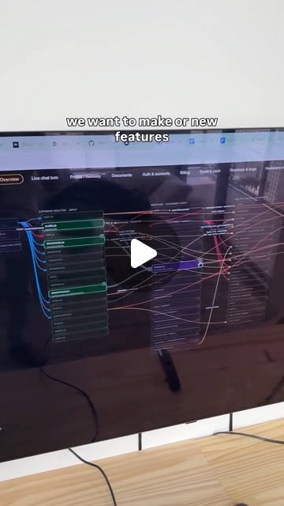

emergent_capability
Beyond Prompting: Prompt Architecture as Engineering Discipline
Prompt engineering is dead. What's replacing it is prompt architecture — the systematic design of context windows, memory layers, retrieval systems, and cognitive scaffolds. The shift from 'write a better prompt' to 'build a better system around the model' is the biggest unlock in practical AI right now.
Anthropic · Claude · Claude Code · Docker · Gemini · Kling · Notion · Ollama · Pika · Qwen · Runway · Sora · TouchDesigner
Try It — Action Sketch
1. Stop optimizing prompts in isolation — map the full context flow 2. Implement RAG with hybrid search + reranking for internal docs 3. Build a memory layer: what the model needs to remember across sessions 4. Add retrieval-augmented generation for domain-specific knowledge 5. Design self-correction: let the model audit its own output 6. Measure: track which context components actually improve output quality
Prerequisites: Experience with at least one LLM API, Understanding of RAG concepts, Familiarity with agent frameworks
Connected Posts (13)
Qwen — Been roaming around NYC with a smol autonomous agent on a rooted...
Part 2 with Additional technical details! — @cyril.engman; uses Qwen; demonstrates AI agents.
Claude — To Do — Every morning 8AM. Scans Gmail, surfaces what needs a...
Comment Prompt 1, 2, 3, 4, 5 or 6 and I’ll DM you my prompt! Here are the 6 @claudeai cowork agents I have running my... — @fionaylin; uses Claude, Notion; demonstrates AI agents.

Claude
Comment BEAR for the full skill. — @constructionbearai; uses Claude, Claude Code.
Claude — Markdowns and folders wrapped in a harness
Companies are marketing ordinary chatbots and simple API tools as “AI Agents.” It’s time we discuss what that actuall... — @gigaqian; uses Claude, Claude Code; demonstrates AI agents, API integration.
Gemini — if you want to listen leave a comment and i can send a link! ♡
testing my new mic by talking about the presentation i had at @datlabnyc about the relationship i see between math eq... — @as.ws__; uses Gemini, Kling, Pika.
Oh and if you want my (theoretical) guide on how to set this
Oh and if you want my (theoretical) guide on how to set this up comment “app” and I’ll send it your way — @angus.sewell; demonstrates AI agents.
We’re building something cool — 5000 M tokens were consumed in less than a minute
We’re building something cool. 😎 #ironman #jarvis #technology #vr — @huwprosser; demonstrates AI agents, MCP.
There Is No Democracy Without Journalism — Scott Pelley was asked about President Trump reportedly calling him a...
There Is No Democracy Without Journalism — @politicallyhomeless1982; demonstrates AI agents, workflow automation.
Comment “skill” and I’ll send you the prompts — my_body_my_joyce
Comment “skill” and I’ll send you the prompts — @angus.sewell; demonstrates AI agents.
If you are also tryna rip a few influencer deals comment “in
If you are also tryna rip a few influencer deals comment “influencer” and I’ll send you this whole system — @angus.sewell; demonstrates AI agents.

Context vs Memory vs Harness engineering explained in 40 sec — 💡These 3 disciplines are core to building agents that ...
Context vs Memory vs Harness engineering explained in 40 seconds by Richmond Alake ⚡️ — @lindavivah; demonstrates AI agents.
Docker — Off topic, and with all due respect, are we watching an AI avatar?
DeerFlow 2.0 is a “super agent harness.” Think OpenClaw but way more robust - and the only thing bigger than that in ... — @gigaqian; uses Docker; demonstrates AI agents, code generation.
Anthropic — @lostandlucky you’re the reason why Im not worried about the tools I...
just your friendly neighborhood anti-hype post of the day. — @lostandlucky; uses Anthropic, Claude, Claude Code; demonstrates AI agents, API integration.
Deeper Dive generated 2026-07-07T09:32:38.471548 · Curated by Claude for Gabe (@6ab3) · dejaviewed.com